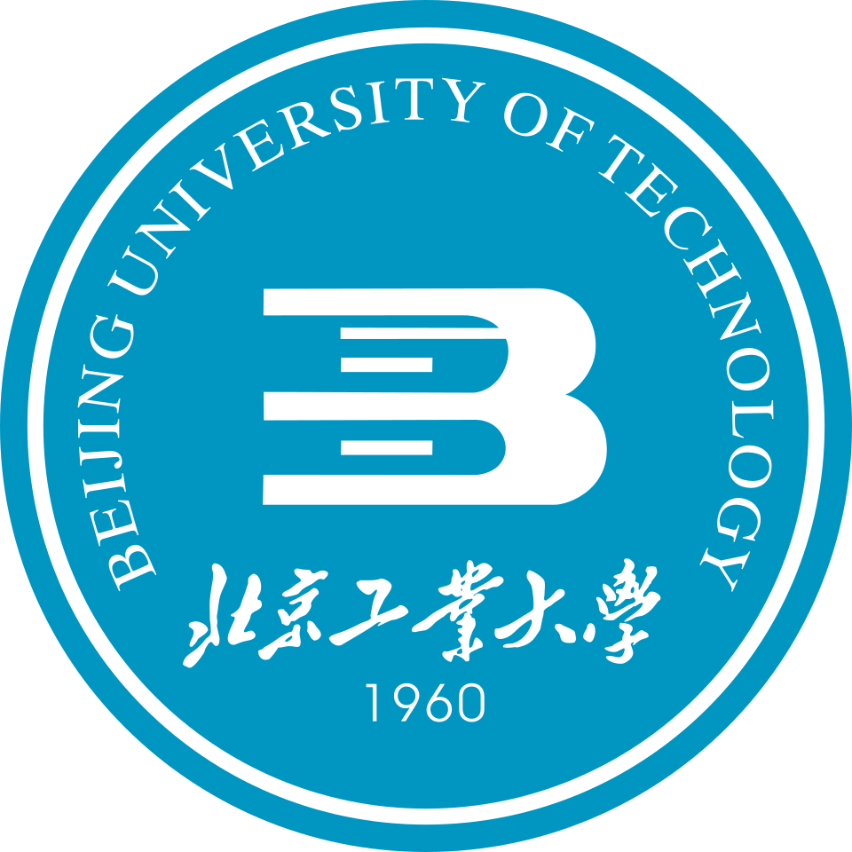
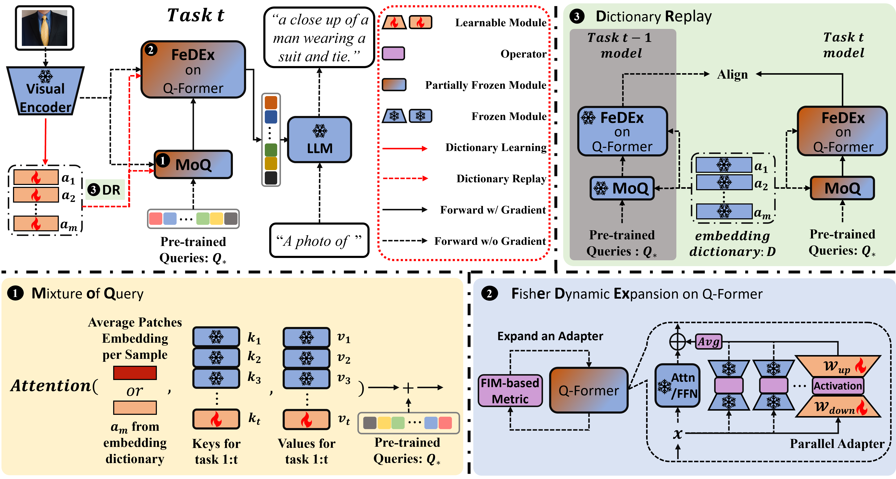
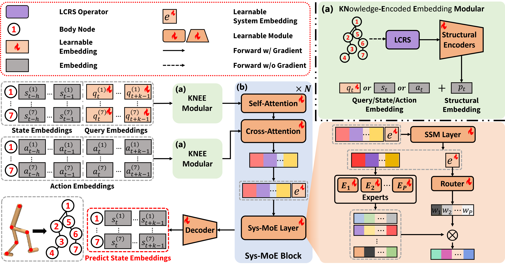
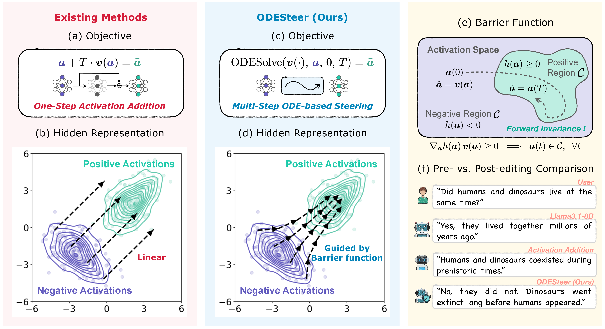
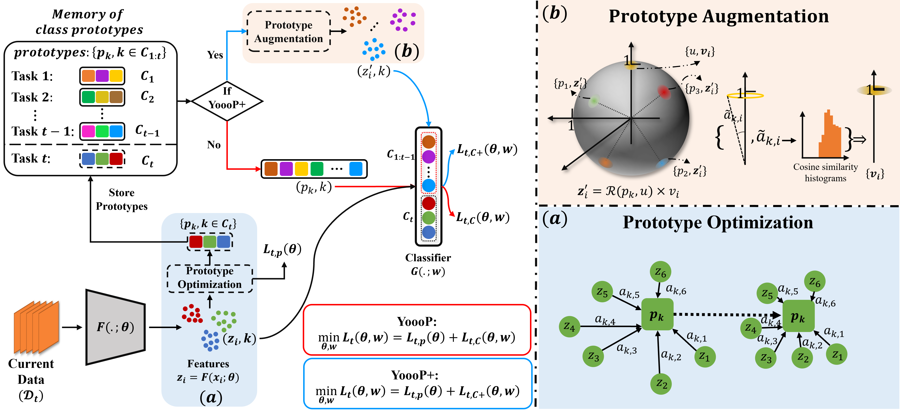

W&M
Graduate Study
Sep 2021 - Present
William & Mary
MS/PhD in Computer Science
Williamsburg, Virginia, United States
I am a fifth-year Computer Science Ph.D. student at William & Mary, advised by Prof. Huajie Shao. I joined William & Mary in 2021.
My research focuses on continual learning: how AI systems can keep adapting to evolving data, tasks, and modalities without catastrophic forgetting. I study this question across classical computer vision models, multimodal models, and the world models and policies used in world-model-based online reinforcement learning.
My research interests include
MS/PhD in Computer Science
Williamsburg, Virginia, United States

BJUTB.Eng. in Electronic Information Engineering
Beijing, China
Summer Research Associate / Part-time Researcher
National Laboratory of Pattern Recognition · Research Intern
Algorithm Researcher
Intelligent System and Engineering Research Center · Research Intern
2026.04First-author paper "ECA: Efficient Continual Alignment for Open-Ended Image-to-Text Generation" was accepted to ICML 2026.
2026.04Co-first-author paper "WestWorld: A Knowledge-Encoded Scalable Trajectory World Model for Diverse Robotic Systems" was accepted to ICML 2026 as a Spotlight paper.
2026.03Co-first-author paper "WestWorld: A Knowledge-Encoded Scalable Trajectory World Model for Diverse Robotics" was accepted to the ICLR 2026 Workshop on World Models.
2026.01Second-author paper "ODESteer: A Unified ODE-Based Steering Framework for LLM Alignment" was accepted to ICLR 2026.
2025.07First-author paper "YoooP: You Only Optimize One Prototype per Class for Non-Exemplar Incremental Learning" was accepted to TMLR 2025.
2024.10Paper "Hybrid Memory Replay: Blending Real and Distilled Data for Class Incremental Learning" was released as an arXiv preprint.
2024.06Joined JPMorgan Chase & Co. as a Summer Research Associate.
2023.06Received the M.S. in Computer Science from William & Mary.
2023.05Paper "YoooP: You Only Optimize One Prototype per Class for Non-Exemplar Incremental Learning" was released as an arXiv preprint.
2021.09Joined William & Mary as an MS/PhD student in Computer Science.

Introduces continual alignment for exemplar-free incremental open-ended image-to-text generation, where visual main topics shift over time while cross-modal alignment must be preserved.
ECA keeps heavy backbones frozen and updates the alignment module with MoQ query composition, FeDEx FIM-guided adapter expansion, and Dictionary Replay over sparse embedding dictionaries.
First author
Builds a knowledge-encoded trajectory world model for dynamics prediction across diverse robotic systems.
Uses system-aware mixture-of-experts and structural embeddings to scale across robot morphologies and improve trajectory prediction and model-based control.
Co-first author
Reframes activation steering for LLM alignment through an ordinary differential equation perspective.
Derives barrier-function-guided, multi-step adaptive steering from positive and negative activation distributions.
Second author
Targets non-exemplar class-incremental learning by optimizing one representative prototype per class instead of storing old samples.
Uses prototype optimization and augmentation to reduce class interference near decision boundaries and mitigate forgetting.
First authorSecond Team, Vehicle Re-Identification, VCIP 2019.
Meritorious Winner, COMAP Mathematical Contest in Modeling (MCM).
Third Prize, 9th Lanqiao Cup, Beijing Division, C/C++ Group A.
Bronze Medal, ACM International Collegiate Programming Contest, Asia Regional, Qingdao Site.
First Prize, Annual TIS Science and Technological Innovation and Practice.
Special Prize, 9th Challenge Cup Capital College Students' Science and Technology Works Competition.
Second Prize, 9th Challenge Cup National College Students' Curricular Academic Science and Technology Works Competition.